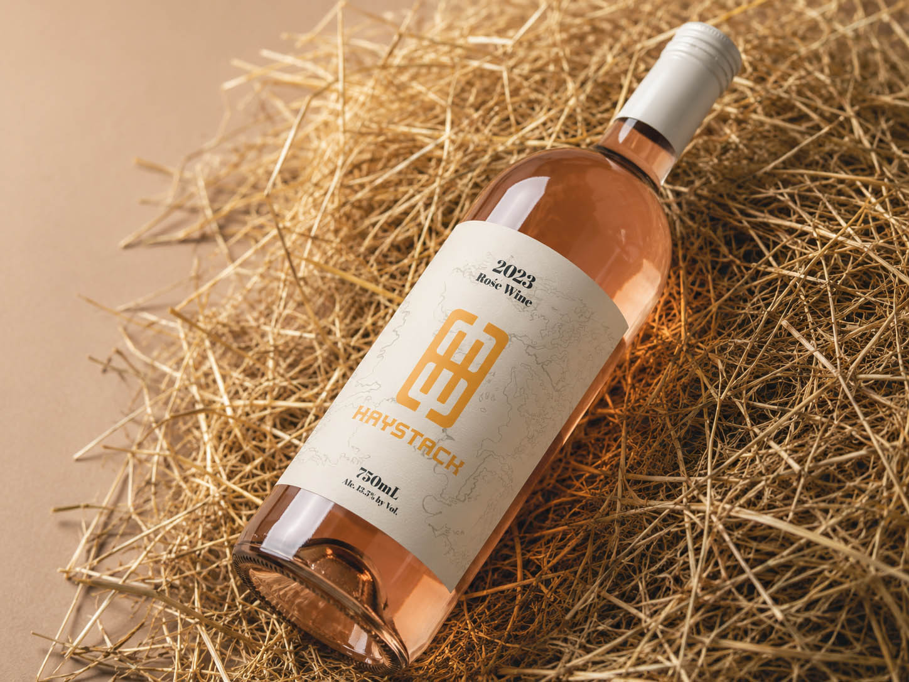
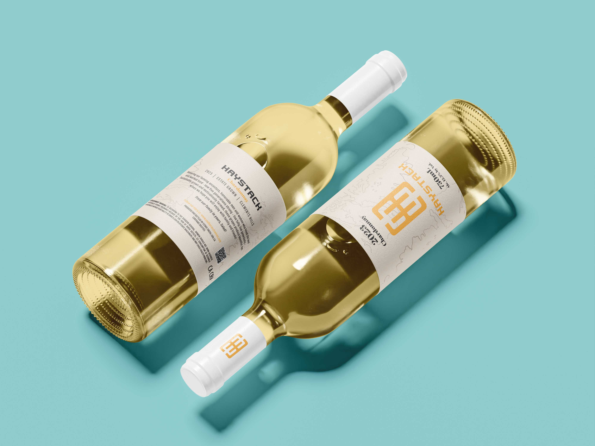
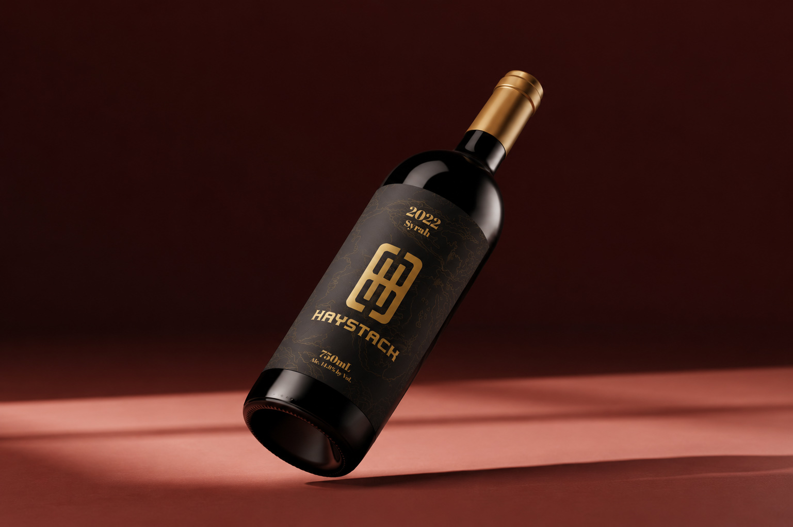
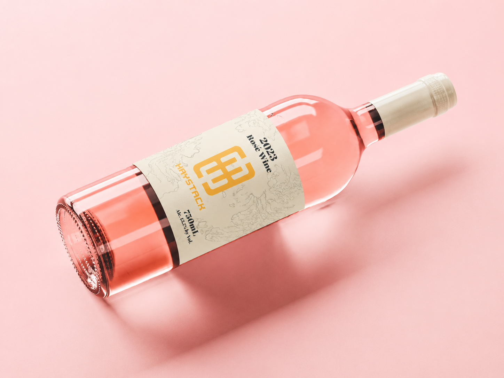
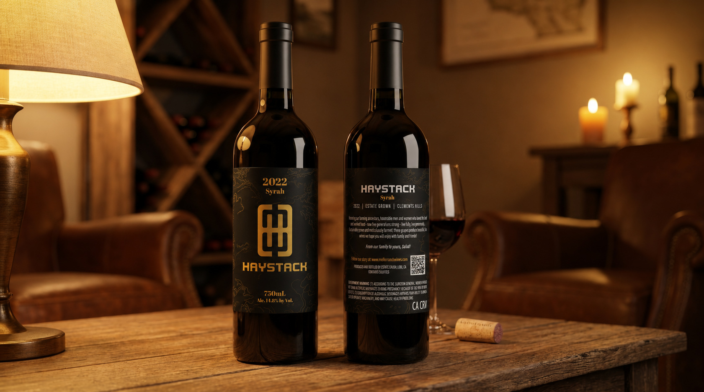
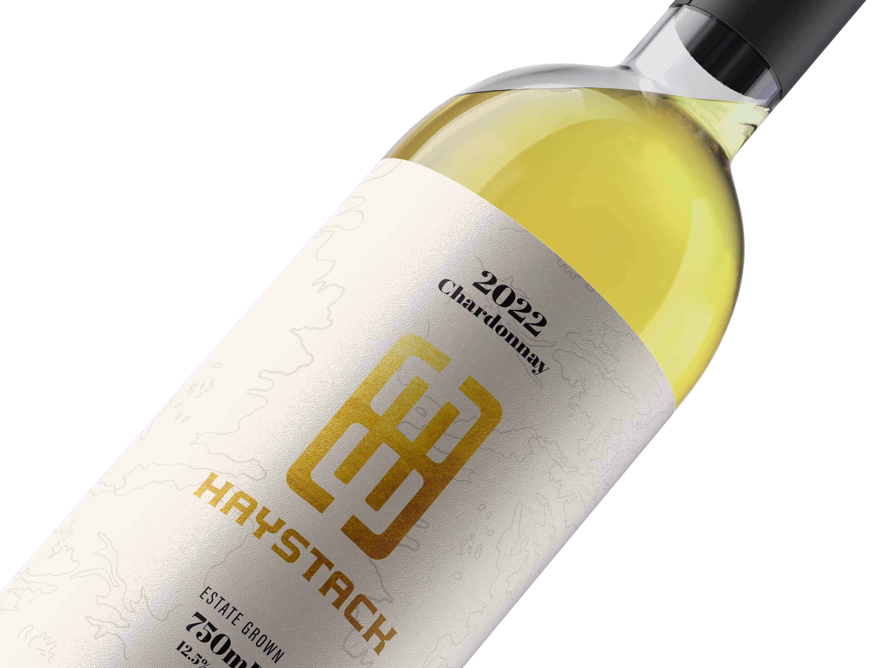
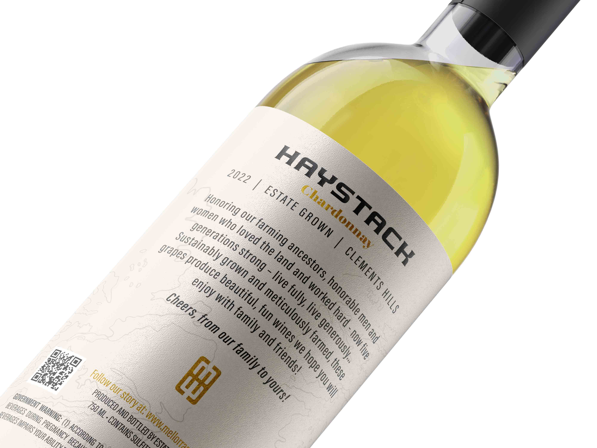

The search for the proverbial needle
Haystack Wines was one of several brands developed under the Mellor Ranch Farms umbrella in California. While many wine projects lean heavily on tradition, ornamentation, and familiar visual tropes, Haystack presented an opportunity to create something more restrained, a brand built around a single strong idea rather than layers of decoration.

Haystack Wines was part of a larger relationship we had developed with Greg Mellor and Mellor Ranch Wines. Through previous work in the California wine industry, we were brought in to help shape several distinct labels under the Mellor Ranch umbrella. Haystack was one of those brands.
Alongside Woollie, Rabbit Hole, and several others, the goal was to create identities that felt completely different from one another while still existing comfortably under the same parent company.

The challenge was creating an identity that could stand on its own among a growing family of brands. Mellor Ranch wanted each label to have its own personality, a world their devotees could enter and be enveloped in.
They had previously worked with another label designer and were getting results that felt expected, safe, and honestly a little boring. How do we create something rooted in agriculture without falling into every agricultural cliché? When they go left, we go right.




